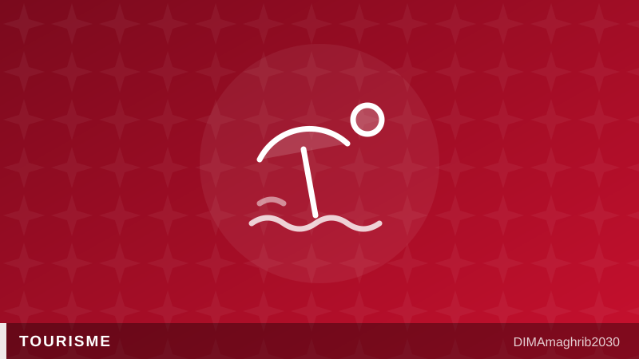

Vacances au Maroc : pourquoi l'été 2026 coûte si cher aux Marocains — et ce que répond la ministreMorocco's Summer Price Shock: Why Locals and the Diaspora Say Holidays at Home Cost More Than Abroad

C'est le paradoxe de l'été marocain. Pendant que les aéroports du royaume battent des records d'affluence, avec 9,4 millions d'arrivées internationales au premier semestre, soit une progression de 6 % selon les chiffres relayés par LesEco.ma et Challenge.ma, une autre conversation, beaucoup plus amère, enfle sur les plages, dans les riads et sur les réseaux sociaux : celle du prix des vacances au Maroc en 2026, jugé tout simplement hors de portée par une partie des Marocains eux-mêmes.
Les Marocains résidant à l'étranger, rentrés en masse pour la saison estivale, sont en première ligne de cette fronde. Bladi.net rapporte les témoignages de MRE dénonçant « l'addition salée » de leurs vacances au pays : hébergement, restauration, locations saisonnières, tout semble avoir flambé. Pour ces familles de la diaspora, qui comparent naturellement avec les tarifs pratiqués en Espagne, en France ou en Turquie, le constat est douloureux — et le sentiment d'être traités comme des touristes à plumer, tenace.
La ministre sort sa calculatrice
Face à la grogne, la ministre du Tourisme a choisi la riposte par les chiffres. En juillet 2026, elle a défendu la compétitivité de l'hôtellerie nationale avec un comparatif repris par Bladi.net : une nuitée standard coûterait en moyenne 500 dirhams au Maroc contre 750 dirhams à l'étranger. Dans un quatre étoiles, comptez 1 000 dirhams contre 1 500 ailleurs ; dans un cinq étoiles, 2 100 dirhams contre 3 100. Autrement dit, selon la ministre, la cherté des hôtels au Maroc cet été serait largement un procès d'intention.
L'argument fait débat. Car ces moyennes nationales masquent les pics saisonniers spectaculaires observés à Agadir, Tanger ou Saïdia en plein mois d'août, précisément là où les familles marocaines et les MRE concentrent leurs séjours. Et c'est bien cette flambée estivale qui, comme le souligne Consonews, a relancé le débat national sur la régulation des tarifs touristiques saisonniers — une idée régulièrement écartée au nom de la liberté des prix, mais qui revient avec insistance à chaque été.
Un tourisme interne qui décroche
Les données donnent du grain à moudre aux critiques. D'après LesEco.ma et Challenge.ma, les nuitées du tourisme interne au Maroc ont certes dépassé les 4 millions à fin mai 2026, mais avec une croissance de seulement 2 % — trois fois moins que la dynamique des arrivées étrangères. Le message envoyé par les vacanciers nationaux est limpide : quand le pouvoir d'achat ne suit pas, on écourte, on renonce, ou l'on part... à l'étranger, où certains MRE et Marocains assurent trouver mieux pour moins cher.
Le pari de l'offre plutôt que du plafonnement
Le gouvernement, lui, refuse toujours d'encadrer les prix. Sa stratégie, détaillée par Libération Maroc, mise sur un autre levier : augmenter massivement la capacité d'hébergement et désaisonnaliser la demande pour provoquer une baisse « mécanique » des tarifs. Plus de lits, des saisons étalées, donc moins de tension sur les prix — c'est le raisonnement officiel.
Reste une question que ni les moyennes ministérielles ni les promesses de nouvelles capacités ne referment : combien d'étés encore avant que l'effet « mécanique » se fasse sentir ? Pour les partisans d'une régulation des prix du tourisme au Maroc, la patience des vacanciers marocains, elle, a déjà atteint son plafond.
By almost any headline measure, Moroccan tourism is having a golden year. The kingdom welcomed 9.4 million international arrivals in the first half of 2026, up 6 percent, according to figures reported by LesEco.ma and Challenge.ma. But beneath the record numbers, a very different story is playing out — one of Moroccan families and diaspora visitors openly furious at what a Morocco holiday costs in 2026, and a government scrambling to explain itself.
The loudest voices belong to the MRE — Moroccans living abroad who return home every summer by the hundreds of thousands. As Bladi.net reports, many are decrying the "addition salée" — the eye-watering bill — of a holiday in the home country this year. Hotels, beach rentals, restaurants: for families who can benchmark prices against Spain, France or Turkey in real time, the comparison stings. Some say a week on a foreign coast now undercuts a week in Agadir, and the accusation that returning nationals are treated as captive customers has become a summer refrain.
The Minister's Numbers
Morocco's Tourism Minister met the backlash head-on in July 2026 with a data-driven defense, relayed by Bladi.net. A standard hotel night, she argued, averages 500 dirhams in Morocco against 750 dirhams abroad. A four-star room runs 1,000 dirhams versus 1,500 elsewhere; a five-star, 2,100 versus 3,100. On paper, Morocco hotel prices in summer 2026 remain a bargain by international standards, the minister insisted.
Critics counter that national averages flatten out exactly what angers travelers: the steep seasonal spikes in Agadir, Tangier and Saidia during the July-August crush, when Moroccan families actually take their holidays. That gap between official statistics and lived experience is precisely why, as Consonews notes, this summer's surge has reignited the national debate over regulating seasonal tourist tariffs — an idea long dismissed in the name of free pricing, but one that resurfaces with more force each year.
Domestic Tourism Is Falling Behind
The numbers suggest the anger is translating into behavior. LesEco.ma and Challenge.ma report that domestic overnight stays passed 4 million by the end of May 2026 — but grew just 2 percent, a third of the pace of foreign arrivals. For a country that has made domestic tourism in Morocco a strategic pillar, that widening gap is a warning light: when prices climb faster than paychecks, locals shorten trips, stay with family instead of booking hotels, or take their dirhams abroad altogether.
Betting on Supply, Not Price Caps
The government's answer, for now, is not regulation. Its strategy, as outlined by Libération Maroc, is to expand hotel capacity and deseasonalize demand — spreading tourism across the calendar and adding tens of thousands of beds — so that prices fall "mechanically" under the weight of competition. More rooms chasing the same travelers, officials argue, will do what no decree can.
It is a coherent economic bet, but a slow-burning one. New resorts take years to build, and the diaspora's grievances are counted in single, precious summers. Until supply catches up, the tension at the heart of Moroccan tourism will remain on full display: a sector booming on foreign demand while the very people it was also meant to serve — Moroccans at home and the MRE who return each year — increasingly wonder whether they can still afford a holiday in their own country.